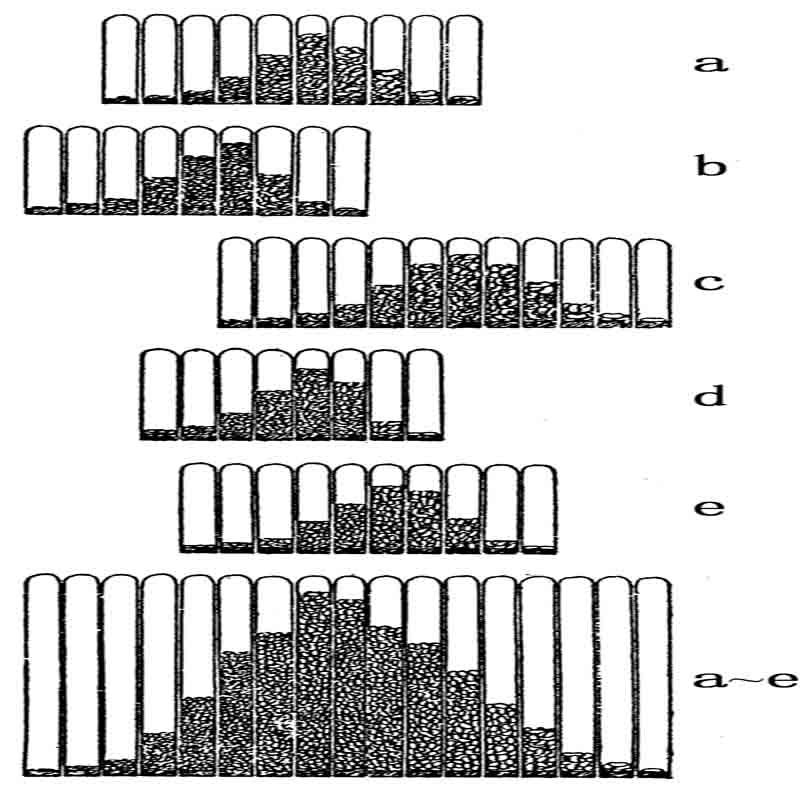
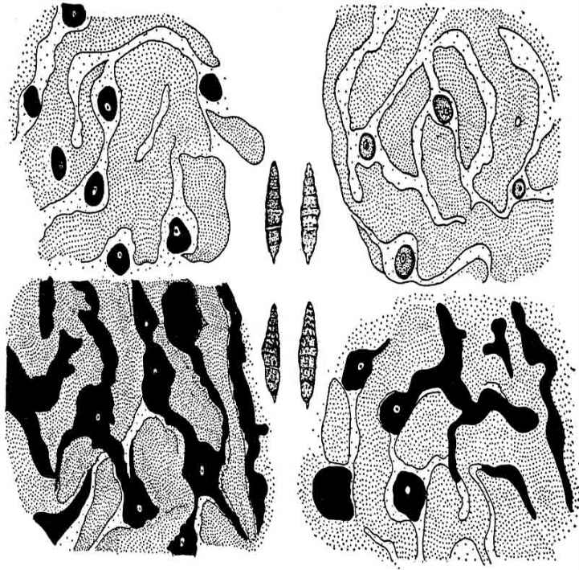
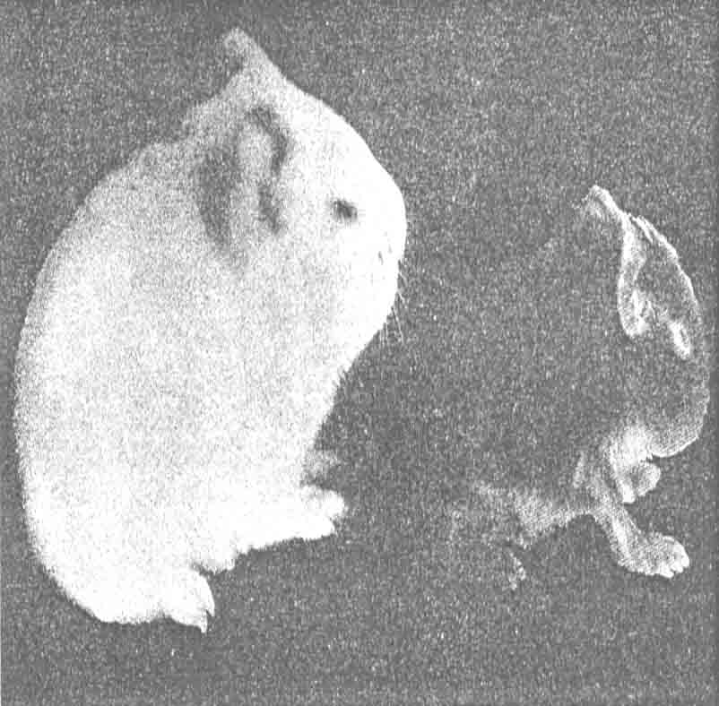

第18章 基因的稳定性
严格选择能够使一群的所有个体都达到接近于原群所表现的极端类型，超过这一极端，选择便无能为力了。现在看来，只有依赖一个基因内所发生的新的突变，或者依赖一群旧基因内的集体变化，才有可能发生进一步或者退一步的永久进展。
杜布赞斯基原籍苏联，慕摩尔根之名来到哥伦比亚大学学习和工作，后又随摩尔根来到加州理工学院。他提出的“综合进化理论”被认为是达尔文之后进化论最重要的进展。
以上所谈到的种种，都含有基因是遗传中一个稳定的要素的意思。至于基因的稳定究竟是化学分子的哪一种稳定，或者仅仅是在一个固定标准附近定量地彷徨变化，因而表现稳定，却是理论上或根本上的一个重要问题。
我们既然不能凭借物理方法或化学方法直接研究基因，所以我们关于基因稳定性的结论，必须根据它的效应推论出来。
孟德尔遗传理论假定基因是稳定的。它假定：各个新体所给杂种的基因，在杂种的新环境内仍然完整。现在举出几个例子来回忆一下有关这项结论的证据的性质。
Andalusian鸡有白色、黑色和蓝色三种个体。白鸡与黑鸡交配，产生蓝色鸡。两只蓝色鸡交配，子代分黑色、蓝色和白色三种，三者的比例为1∶2∶1。在蓝色鸡内，白色基因同黑色基因分离。半数的成熟生殖细胞得到黑色要素，半数得到白色要素。任何卵子同任何精子任意受精，孙代将得出所观察到的1∶2∶1。
关于杂种内有两种生殖细胞的这个假设是否正确，可以检验如下。蓝色杂种如果回交纯种白鸡，子代一半为蓝色鸡，一半为白色鸡。如果蓝色杂种回交纯种黑鸡，子代一半为黑鸡，一半为蓝色鸡。两次结果都符合于这一假设：蓝色杂种的基因都是纯洁的，一半是黑色基因，一半是白色基因。两者同居在一个细胞之内，却没有互相污染。
上例中的杂种与两亲不同，从某种意义说来，它是两亲之间的中间型，在第二个例子里，杂种同一个亲型没有分别。当黑豚鼠和白豚鼠交配时，子代全黑。子代回交，孙代为三黑一白。孙代的白豚鼠像原来白豚鼠一样又繁殖白豚鼠。白基因虽然与黑基因在杂种体内同居一处，却没有受到污染。
再选一个例子，其中两亲很相类似，杂种虽然表现某种程度的中间性，但是变化这么大，以致变化的两端和两个亲型分别重叠。这些类型只有一对基因的差别。
黑檀色果蝇同炱黑色果蝇交配，子代像上文所谈到的那样呈中间色，并且变化很大。子代自交，孙代颜色由淡而深，构成一个实际上是连续的系列。不过也有些方法来测验这些深浅不同的颜色。测验结果，发现孙代颜色系列由黑檀色纯种、杂种、和炱黑色纯种三种个体组成，三者的比例是1∶2∶1。这里我们又有了基因未曾混杂的证明。颜色深浅的连续系列只是性状变异性互相掩盖的结果。
以上各例只涉及一对不同的基因，所以一切都简单明了。这些例子帮助了基因稳定原则的树立。
然而事实上，现实情况往往不是这么简单。许多类型在几个基因上互不相同，每个基因对于同一个性状都有它的影响。因此，在它们的杂交里便看不到简单的比例。例如，长穗同短穗两族玉蜀黍杂交，下一代的穗轴长短适中。子代自交，孙代出现各种长度的穗轴。有些像原来短穗族那样短，有些像原来长穗族那样长。两者都是极端。两者之间有一系列的中间型。检验孙代个体，表明有几对基因影响穗轴的长短。
另一个这样的例子是人的身高。人身长大可能由于腿长，或者由于躯长，或者两者兼备。有些基因可以影响所有部分，而另一些基因对于某一部分有着更大的影响。其结果是遗传情况复杂，而且还没有得到解决。此外，环境对于最后产品也可能有某种程度的影响。
这些都是多对因子的例子，遗传学工作者企图决定在每个杂交里究竟有多少个因子，结果之所以复杂，只是因为所牵涉的是几个基因或者许多个基因。
在孟德尔发现被揭露以前的时期里，正是这一类的变异性，为自然选择理论提供了它所依据的证据，这个问题留待以后考虑。首先必须谈谈我们在认识选择学说中的一些限制上，由1909年Johannsen光辉的研究所取得的伟大进展。
Johannsen用一种圆艺植物——公主菜豆，进行实验。这种菜豆完全借自花授粉繁殖。长期连续自交的结果，每个植株都变成了纯合子，这就是说，每对的两个基因都是相同的。因此这类材料适合于进行精密的实验，借以决定菜豆上的个体差异是否受到选择的影响。如果选择改变个体的性状，在这种情况下，选择必须先改变基因本身才行。
每个植株上的豆粒大小略异，而且按豆粒大小排列时，会得出常态几率曲线。不管连续从各个世代中选出的，是大豆粒或是小豆粒，合并而成（仿Johannsen）任一植株以及它的一切后代，在豆粒大小上，都表现了同样的分布曲线（图150）。后代总是结出同样的一群豆粒。

图150 a~e群的菜豆代表五个
纯系；下面a~e群是由五个纯系合并而成（仿Johannsen）
从他检查过的材料里发现了九族菜豆。他认为他的研究结果足以说明某一植株其所以豆粒大小不同，是由于最广义的环境所引起的。只需要在选择开始时选用每对两个相同基因的材料，便可能证实这一论点。这证明了选择对于基因本身的改变，没有影响。
如果在开始时选择有性生殖的动物或植物不是纯合的，那么，直接结果就会不同了。这点有了很多实验上的证明，例如Cuénot的斑毛鼠实验，MacDowell的家兔耳长的实验，或者East和Hayes玉蜀黍的实验。任何一个实验都可以作为一个例子来说明在选择下所发生的变化。这里只举出一个例子便够了。
Castle研究了选择对于一族披巾鼠毛色式样的影响（图151）。他开始用市售的披巾鼠的子代实验，一头选择条纹最宽的鼠，另一头选择条纹最窄的鼠，并且把两系分隔开来。经过几个世代以后，这两群披巾鼠表现了适度的差异：一群的背条平均比原来的一群宽一些，另一群的背条又要窄一些。选择作用已经以某种方法改变了条纹的宽度。到现在为止，在这些实验结果里，还没有一点可以证明：这种变化不是由于选择把决定背条宽度的两组因子分离开来所引起来的。但是Castle却认为，他是在研究一个基因的效应，因为当披巾鼠同全黑鼠（或全褐鼠）杂交，以后子代杂种又进行自交时，孙代便得出全黑（或全褐）鼠和披巾鼠两型，互成3与1之比。这种孟德尔式比例确实证明了毛上的有色条纹起源于一个隐性基因，但是却没有证明：这个基因的作用，有可能受到与背带宽度决定有关的其他遗传因子的影响的，这才是真正争论的问题。

图151 披巾鼠的四个类型（仿Castle）
以后Castle进行了Wright所设计的一个实验，事实上证明：这些结果，是由于条纹宽度的修饰基因被隔开来所引起的。检验方法如下：经过精选以后的各族，回交野鼠（即全身黑色或褐色），得出第二代的条纹鼠。再用第二代条纹鼠回交野鼠。经过两三代回交以后，发现被选择的一群，好像又变回了原来的样子。选出来的窄带的一族向宽带变化，而选出来的宽带的一族却向窄带变化。换句话说，精选的两族愈来愈相同，愈来愈和它们最初的原来那一族相同。
这项实验结果完全符合于下一见解，即野鼠有修饰基因影响着条纹鼠条纹的宽度。换句话说，原来的选择作用，把变宽基因同变窄基因分离开来，从而改变条纹的性质。
有一个时候，Castle甚至宣称：披巾鼠实验结果重新建立了他所谓的达尔文的见解，以为选择作用本身使遗传物质照着选择方向发生变化。如果这真正是达尔文的意思，那么，这种对变异的见解似乎可以大大地巩固了进化借自然选择而进行的理论。1915年Castle说道：“我们现在所拥有的全部证据，表明了外界的修饰因子不能解释在披巾式样中所看到的这些变化，披巾式样本身便是一个明确的孟德尔单元。我们不能不作出下一结论：单元本身在反复选择下向着选择的方向变化着；有时，突然像在我们的‘突变’族那样，突变族本身是一个高度稳定的正变异；但更多的是逐渐的变化，像在正的和负的两个选择系列中不断发生的那样”。
次年，他说道：“目前许多遗传学者认为单元性状是不可改变的。……几年来，我研究过这个问题，在这一点上得到了一个总的结论，那就是，单元性状可以改变，也可以重新组合。许多孟德尔学派的人们另有一种想法，不过我相信，这是因为他们研究这个问题还不够精密的缘故。单元性状发生定量的变异这件事实是不会错的。……选择作为进化中的一个动力，必须恢复它在达尔文估计中的那种重要地位，它是一个能够产生连续而进步的种族变化的动力。”
达尔文是否相信选择过程决定或影响未来变异的方向呢？仔细读一下达尔文的论著，除非我们引用达尔文关于获得性遗传的另一项学说，否则是找不到一点明文上的证据的。
达尔文坚决信仰拉马克学说。每当自然选择的学说碰到困难的时候，他毫不犹豫地运用这个学说。因此，任何人只要他愿意（虽然达尔文本人未把两说混为一谈，Castle也没有这样做），都可以逻辑地指出，每当一个有利的类型被选择时，它的生殖细胞就好像受到了自己身体所产生的泛子的影响，而且可以预料它会按照被选择的那种性状的方向去改变。所以每一个新的进展，势必从一个新的基础出发，如果围绕这个新的中数（作为一个突破以前限度的中数）发生了彷徨变异，那么，在前一个进展的方向上，预计会出现更进一步的进展。换句话说，自然选择势将按照每次选择的方向更前进一步。
但是，像我上面所谈过的，达尔文从来没有运用这一论点来支持他的选择学说，虽然人们也可以认为每逢达尔文看到自然选择不够解释事物，只好援引拉马克原理来支持这个新的进展的时候，原则上他是这样做的。
今天我们把选择作用，不论是自然的或人工的，都看成是最多只能在原有基因组合可以影响的变化范围内引起变化；或者说选择作用不能使一群（一个物种）超过这一群原有的极端变异。严格选择能够使一群的所有个体都达到接近于原群所表现的极端类型，超过这一极端，选择便无能为力了。现在看来，只有依赖一个基因内所发生的新的突变，或者依赖一群旧基因内的集体变化，才有可能发生进一步或者退一步的永久进展。
这个结论不仅是从基因稳定性理论得来的逻辑的推论，而且也根据于很多观察，这些观察表明每逢一群生物遭到选择时，它们开始变化很快，很快便缓慢下来，不久便停止了变化，而与原群中少数个体所表现的一种极端类型相同或相接近。
以上只就杂种内基因的沾染方面以及从选择观点，来考虑基因的稳定性问题。关于躯体本身可能影响基因的组成一点，不过仅仅接触了一下。如果基因受到杂种躯体性状的影响，那么，作为孟德尔第一定律基本假定的关于杂种体内基因的精确的分离，势必是不可能的了。
这项结论使我们面对着拉马克的获得性遗传理论。这里不拟考虑拉马克理论的各项主张，那样做会离题太远，不过容许我提请大家注意某些关系，这些关系是在这个学说所假定的躯体影响生殖细胞的情况下，也就是说在一种性状上的一个改变，可以引起特殊基因内的相应改变的情况下，期望得到的那些关系，几个例子便可以说明其中的主要事实。
黑家兔同白家兔交配，杂种家兔黑色，不过杂种的生殖细胞却分为产生黑毛和产生白毛两型，各占半数。杂种的黑毛不能影响产生白毛的生殖细胞。不论白毛基因在黑毛杂种体内停留多久，白毛基因总是白毛基因。
如果把白毛基因说成是某种实体，那么，假定拉马克理论能够成立，就应该表现出这个基因所寄居的个体躯体性状的一些效应。
然而如果把白毛基因说成是黑毛基因的缺失，便自然谈不上杂种的黑毛能够影响一个并不存在的东西了。对于任何主张存缺理论的人们说来，用这项论点来反对拉马克理论，是不足以使它们信服的。
不过从另一方面考虑，也许更为恰当。白花紫茉莉同红花茉莉杂交，产生中间型杂种，开桃色花（图5）。如果把白色说成是一个基因的缺失，那么，红色必定起源于一个基因的存在。杂种花的桃色比红色淡些，如果性状影响基因，则杂种体内的红花基因应该被花的桃色冲淡。这样的效应在这里以及其他材料里都没有记载下来。红花基因同白花基因在桃色杂种内分离开来，没有显出任何样的躯体影响。
另一证据，在反驳获得性遗传理论上，或许更为有力。有一种果蝇，称为不整齐腹缟，其腹部整齐的黑缟或多或少地消失了一些（图152）。从食物丰富、潮湿而带酸性的培养基里最初孵化出的果蝇，其腹部黑缟消失最多。以后，培养基愈久愈干，这时孵出的果蝇也就表现出愈来愈正常的形状，直到最后同野生型果蝇没有区别为止。这里，我们碰到一个对环境影响极其敏感的遗传性状。这一类性状，为研究躯体对于生殖细胞的可能的影响，提供了有利的机会。

图152 a.正常雄蝇的腹部；b.不整齐腹缟雄蝇的腹部；c.正常雌蝇的腹部；d.不整齐腹缟雌蝇的腹部
把最先孵化出来的腹缟高度不整齐的果蝇和孵化较晚的正常腹的果蝇，在同一条件下，同时分别繁育，两者的子代完全相同。最先孵化出来的果蝇，腹部不整齐，以后孵化出来的果蝇，则比较正常。对生殖细胞来说，亲体的腹部正常与否，是没有一点区别的。
如果说影响也许太小，以致在第一子代还不能看出，那么让我补充一句，较晚孵化出来的果蝇曾经连续繁殖了十代，结果也看不出任何差异。
另一个例子也同样确凿可信。有一个突变型果蝇称为无眼型（图30）。它们的眼比正常眼小，而且变化很大。经过选择，得出了一个清一色的原种，其中大多数果蝇无眼，不过当培养时间愈来愈久，有眼果蝇也就愈来愈多，眼也愈来愈大。如果把这些后期孵化的果蝇繁育起来，它们的子代同无眼果蝇的子代是一样的。
在不整齐腹缟的例子里，晚期孵化中的幼虫，其对称和色素形成都不是一个明显的存在性状。这里，在晚期孵化出来的果蝇里，眼的存在却是一个正的性状，可能被认为是比不整齐腹缟的例子更好的一个证据。然而两例的结果仍然是一样的。
近几年来，有许多人自以为提供了获得性遗传的证据，这里完全不必要逐个考虑。我只选出一个有结论所依据的数字的和定量的资料，因而是最完备的例子来说。我所指的是Dürken最近的研究。这个实验似乎是仔细进行的，而且对Dürken来说，它为获得性的遗传提供了一个证据。
Dürken用甘蓝粉蝶（pieris brassicae）幼虫进行研究。1890年以来便已知道：某些蝶类的幼虫化蛹（即从幼虫变为静止的蝶蛹）时，蛹的颜色受到环境的几分影响，或者受到照射光线颜色的几分影响。
例如，粉蝶幼虫如果在白昼甚至在弱光下生活、转化，则蛹色很黑；如果在黄色和红色环境，或者在黄色和红色帘后生活、转化，则蛹呈现绿色。绿色之所以形成，是由于缺乏表层黑色素。如是内部的绿黄色透过表皮表现出来（图153）。

图153 中央为粉蝶四个不同颜色的蛹。在它们的外边，表示在不同颜色的类型里，表皮内色素细胞的特殊排列（仿Leonore Brecher）
Dürken的实验是在橙色（或红色）光下饲养幼虫，由此得到浅色或绿色的蛹。由蛹转化而成的蝶则放在野外笼内饲养，并且收集它的卵子。从这种卵子孵化出来的幼虫，有些放在有色光线下饲养，另一些则放在强光或黑暗中饲养。后者用为对照组。实验结果的摘要见图表（图154）。图中用黑条长度表示黑色幼虫的数目，用浅色条表示绿色或浅色的幼虫数目。事实上，蛹分为五个有色群。其中三群合并成黑色，另外两群则合并成浅色。
像图154.1（代表正常颜色）所表明的，几乎所有自由收集或者在自然环境下收集的蛹都是黑色的；只有少数才是浅色或绿色。从这里产生的幼虫放在橙色环境内饲养。幼虫转化成蛹，其中浅色类型的百分比很高，如154.2。如果只选出浅色类型予以饲养，有些放在橙色光下，有些放在白光下，其他放在黑暗中，结果如154.3a和154.3b所示。3a的浅色蛹比上一代多，因为在橙色下连续两代，效果加强了。不过3b的一组更为重要。在白光或黑暗中饲养的比在野生型1中出现更多的浅色蛹。Dürken认为浅色蛹的增加，一部分归之于橙色光对于上一代的遗传效应，一部分归之于新环境的相反方向的效应。

图154 粉蝶中，黑色蛹和浅色蛹的选择结果（仿Dürken）
从遗传学观点看来，这种解释是不令人满意的。第一，这个实验证明，并不是所有幼虫对橙色光都有反应。如果有反应的幼虫具有不同的遗传性，那么，当选择它们——即实验中的浅色蛹——进行一次橙色光实验而对照组则放在白光和黑暗中实验时，我们已经是在运用一个反应较强的类型，一群经过了选择的类型，而且预料它们在下一代会再度反应，事实上确是如此。
因此，除非一开始便采用遗传上同质的材料，或者采用其他对照实验，否则这项证据绝不能证实环境的遗传效应。
几乎所有这一类的研究工作，都犯了同样的错误。即令现代遗传学没有作出更多的成绩来，单就指出这类证据毫无价值一点来说，也足以证明现代遗传学是正确的。
现在我们转到另一些例子，其中有一些很可能是生殖细胞经过特殊处理后直接受到了损害，并且受到损害的生殖物质被遗传给以后各代。由于有了这种损害，以后各代中可能发现畸形。这就是说，上述处理并不是借着先产生胚胎身上的缺陷来影响生殖物质，而是同时影响了胚胎和它的生殖细胞。
Stockard在酒精对于豚鼠的影响问题上，进行过一长串的实验。他把豚鼠放在有酒精的密闭箱中。豚鼠呼吸饱含酒精的空气，几小时后，便完全失去知觉。有些豚鼠在处理中进行交配，有些在处理结束后进行交配，两者的结果基本相同。许多胎儿流产了或者被吸收了，另一些生下来便是死的，还有一部分表现了一些畸形，特别是神经系统和眼的畸形（图155）。只有不表现缺陷的豚鼠才能交配。在它们的子代中，畸形幼龄豚鼠和表面上正常的个体不断出现。在更后的世代里，畸形豚鼠继续出现，不过只能从一定个体产生出来。
检查经过酒精处理的谱系，看不出实验结果符合于任何已知的孟德尔式比例的证据。甚至，畸形豚鼠所表现的各种部位上的效验，也不像在单个基因改变时所看到的那样。另一方面，这些缺陷，同我们在实验胚胎学中所熟悉的受到毒物处理以后的卵子发育异常，有许多共同之点。Stockard已经唤起人们对这些关系的注意，并且认为他的实验结果意味着酒精使生殖细胞产生某种损害，有关遗传机制中某一部分的损害。效应之所以局限于某些部分，仅仅因为这些部分对于任何脱离发育正轨的变化最为敏感。这些部分以神经系统和感觉器官最为常见。

图155 酒精中毒的祖先所产生的两只不正常的幼龄豚鼠（仿Stockard）
最近，Little和Bagg进行了一系列实验，研究镭对于妊娠鼷鼠和大鼠的影响。在适当处理下，子宫内的胎儿可能有畸形发育。产前检查，看到了脑脊髓或其他器官（特别是四只原基）有出血区域（图156）。在这些胚胎当中，有的在产前死亡，并且被吸收了；另一些则造成流产。还有一些活着生出来，其中有一些生存下来，可以繁殖。它们的后代往往表现出脑或四肢上的缺陷。也许一只眼或者两只眼有缺陷。

图156 大鼠母体受镭射线照射后，
子宫内胎儿表现出血区域（仿Bagg）也许没有眼睛，或者只有一只很小的眼。Bagg用这些鼷鼠交配，在它们所产生的许多畸形子代个体中，看到了和原来胚胎身上直接引起的缺陷大致相似的缺陷。
我们应该如何解释这些实验呢？是不是镭首先影响正在发育中的胚胎的脑髓，引起缺陷，然后由于脑髓上有这些缺陷，于是同一胚胎的生殖细胞才受到影响呢？这项解释显然是不通的。当脑髓单独受到影响时，下一代应该期望出现脑的缺陷；当眼是受影响的主要器官时，下一代应该只表现出眼的缺陷。然而在所有报道中，都没有看到这样的结果。畸形脑和正常眼的鼷鼠可以产生有缺陷眼的子代。换句话说，这里没有特定效应，只有一般的效应。
另一种解释则认为：在子宫内，幼鼠的生殖细胞受到镭的影响。当这些生殖细胞发育成为新世代的个体时，这些个体也有缺陷，因为最容易在正常发育上受阻扰的器官，也就是最容易被发育中任何改变所影响的那些器官。总之它们是最软弱或者平衡最精微的一个发育阶段，因而首先表现出任何脱离常轨的影响。我想，这就是目前这些实验和其他类似实验的最合理的解释。